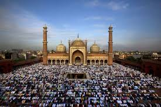
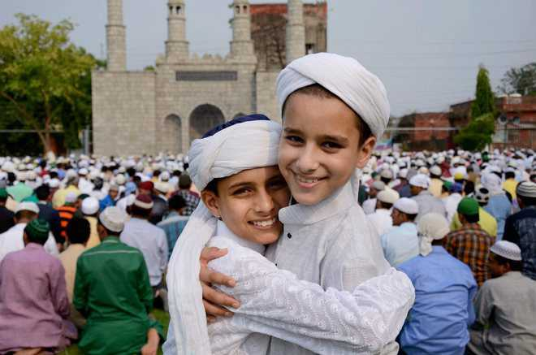
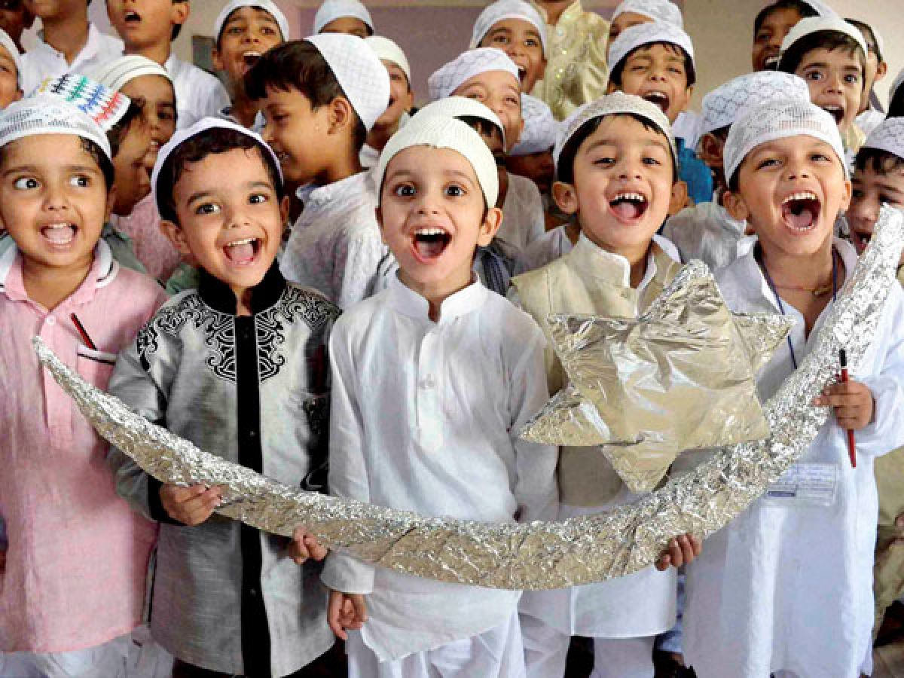

Eid al-Fitr ( eed əl FIT-ər; Arabic: عيد الفطر ʻĪd al-Fiṭr, IPA: [ʕiːd al fitˤr]), (sometimes known as Eid ul-Fitr), also called the "Festival of Breaking the Fast", is a religious holiday celebrated by Muslims worldwide that marks the end of the month-long dawn-to-sunset fasting of Ramadan. This religious Eid is the only day in
  the month of Shawwal during which Muslims are not permitted to fast. The date for the start of any lunar Hijri month varies based on when the new moon is sighted by local religious authorities, so the day of celebration varies by locality. Eid al-Fitr has a particular salat (Islamic prayer) that consists of two rakats (units) generally performed in an open field or large hall.
It may only be performed in congregation (jamāʿat) and features six additional Takbirs (raising of the hands to the ears while saying "Allāhu ʾAkbar", meaning "God is the greatest") in the Hanafi school of Sunni Islam: three at the start of the first rakat and three just before rukūʿ in the second rakat. Other Sunni schools usually have twelve Takbirs, similarly split in groups of seven and five. In Shia Islam, the salat has six Takbirs in the first rakat at the end of qira'a, before rukūʿ, and five in the second. Depending on the juristic opinion of the locality, this salat is either farḍ فرض (obligatory), mustaḥabb مستحب (strongly recommended) or mandūb مندوب (preferable).
FEid al-Fitr has a particular salat consisting of two rakats and generally offered in an open field or large hall. It may only be performed in congregation and has an additional extra six Takbirs, three of them in the beginning of the first raka'ah and three of them just before ruku' in the second raka'ah in the Hanafi school. This Eid al-Fitr salat is, depending on which juristic opinion is followed, Fard, Mustahabb or mandoob.
 Eid al-Fitr was originated by the Islamic prophet Muhammad. According to certain traditions, these festivals were initiated in Medina after the migration of Muhammad from Mecca. Anas, a well-known companion of the Prophet, narrated that, when the Prophet arrived in Medina, he found people celebrating two specific days in which they entertained themselves with recreation and merriment. At this, the Prophet remarked that Almighty has fixed two days of festivity instead of these for you which are better than these: Eid al-Fitr and Eid al-Adha.